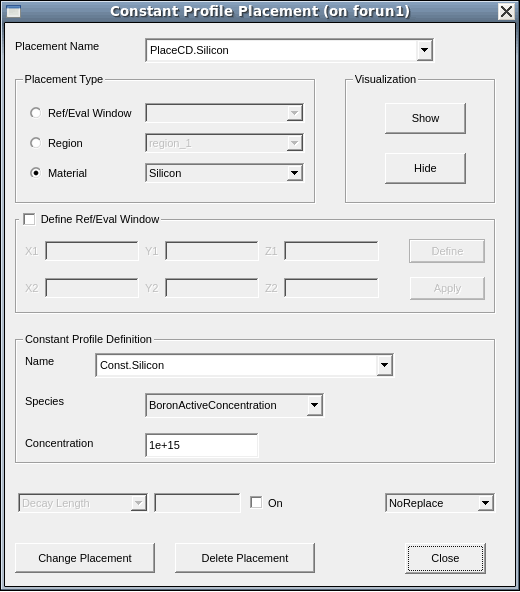
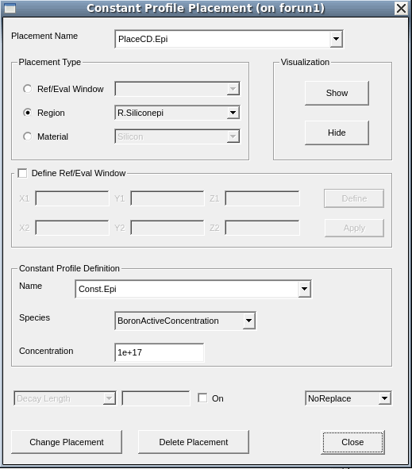
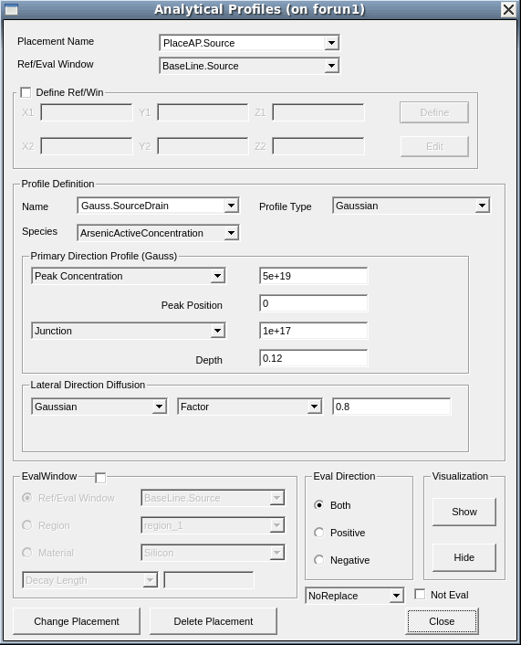
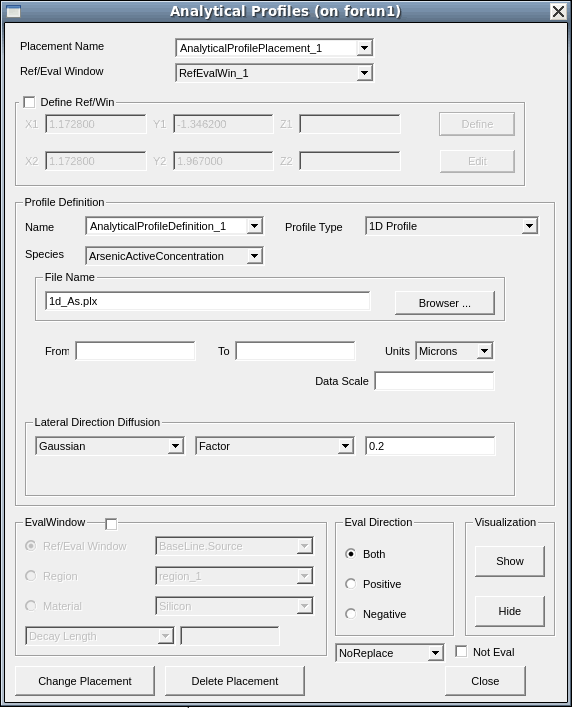
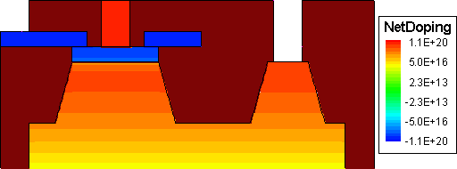

3.1 Defining Constant Doping Levels in Materials
3.2 Defining Constant Doping Levels in Regions
3.3 Defining Analytic Doping Profiles
3.4 Saving the Model
3.5 Importing External Profiles
3.6 Assignment
In this section, the SOI MOSFET built in Section 2. Generating 2D Boundaries will be used.
This section introduces the most basic approach to defining a constant background doping level within a material type.
To introduce a constant boron background doping of 1x1015 cm-3 in the silicon material:

Figure 1. Constant Profile Placement dialog box.
The assignment of a constant doping profile to a specific material type involves, in general, two steps:
The corresponding Scheme commands that reflect these two steps are:
(sdedr:define-constant-profile "Const.Silicon" "BoronActiveConcentration" 1e+15) (sdedr:define-constant-profile-material "PlaceCD.Silicon" "Const.Silicon" "Silicon")
The placement of a constant doping profile in a material adds the profile everywhere that the specified material resides. This can include more than one device region. Alternatively, you can assign a doping profile only to selected device regions.
To dope the silicon epilayer with a uniform boron concentration of 1x1017 cm-3:

The corresponding Scheme commands are:
(sdedr:define-constant-profile "Const.Epi" "BoronActiveConcentration" 1e17) (sdedr:define-constant-profile-region "PlaceCD.Epi" "Const.Epi" "R.Siliconepi")
Constant doping profiles also can be applied to an evaluation window by selecting Ref/Win in the Placement Type group box. See Section 4.3 Defining Regional Refinements for instructions to define an evaluation window.
In Sentaurus Structure Editor, you can define doping profiles characterized by analytic functions, such as Gaussian and error functions. In addition, you can define doping profiles of your own functions, which can be useful in some applications.
The placement of an analytic profile is performed usually in two steps. The first step defines the baseline and the second step defines the shape of the profile itself. The baseline determines the lateral extent of the profile and also can serve as the reference point for the depth of the peak position.
Two Gaussian doping profiles are to be added to the source/drain and their extension regions of the example structure. For the source/drain region, the target is a Gaussian phosphorus profile with a peak concentration of 5x1019 cm-3, a junction depth of 0.12 μm, and a lateral straggle/diffusion factor of 0.8.
For the source/drain extensions, the goal is a Gaussian arsenic profile with a peak concentration of 5x1018 cm-3 and a junction depth of 0.035 μm.
Automatic Region-Naming Mode: By default, Sentaurus Structure Editor automatically assigns names such as RefEvalWin_1 and RefEvalWin_1 to newly created reference windows such as baselines. This is useful in some applications but, in most cases, you might prefer to use your own names, which are more descriptive and easier to remember.
To switch off the automatic region-naming mode, choose Draw > Auto Region Naming (ensure there is no check mark next to this command).
When the mode has been switched off, you will be prompted to enter the name whenever a new baseline is created.
To define the baseline:
Similar steps can be repeated to define the drain-side baseline and the baselines for the source and drain extension junctions.
Use the following baseline names and the start and end locations.
| Junction | Baseline name | Start point | End point |
|---|---|---|---|
| Source | BaseLine.Source | (-0.8 0) | (-0.2 0) |
| Drain | BaseLine.Drain | (0.2 0) | (0.8 0) |
| Source extension | BaseLine.SourceExt | (-0.8 0) | (-0.1 0) |
| Drain extension | BaseLine.DrainExt | (0.1 0) | (0.8 0) |
The corresponding Scheme commands are:
(sdedr:define-refeval-window "BaseLine.Source" "Line" (position -0.8 0.0 0.0) (position -0.2 0.0 0.0)) (sdedr:define-refeval-window "BaseLine.Drain" "Line" (position 0.2 0.0 0.0) (position 0.8 0.0 0.0)) (sdedr:define-refeval-window "BaseLine.SourceExt" "Line" (position -0.8 0.0 0.0) (position -0.1 0.0 0.0)) (sdedr:define-refeval-window "BaseLine.DrainExt" "Line" (position 0.1 0.0 0.0) (position 0.8 0.0 0.0))
To define and place an analytic doping profile:

Similar steps can be executed to assign the drain junction profile and the profile for the source/drain extension junctions. Use the following listed profiles accordingly.
| Junction | Placement name | Baseline name | Profile name |
|---|---|---|---|
| Source | PlaceAP.Source | BaseLine.Source | Gaussian.SourceDrain |
| Drain | PlaceAP.Drain | BaseLine.Drain | Gaussian.SourceDrain |
| Source extension | PlaceAP.SourceExt | BaseLine.SourceExt | Gaussian.SourceDrainExt |
| Drain extension | PlaceAP.DrainExt | BaseLine.DrainExt | Gaussian.SourceDrainExt |
The Gaussian profiles are defined as follows.
| Profile name | Peak concentration | Peak position | Junction concentration | Junction depth | Lateral factor |
|---|---|---|---|---|---|
| Gaussian.SourceDrain | 5x1019 cm-3 | 0 μm | 1017 cm-3 | 0.12 μm | 0.8 |
| Gaussian.SourceDrainExt | 5x1018 cm-3 | 0 μm | 1017 cm-3 | 0.035 μm | 0.8 |
The corresponding Scheme commands are:
(sdedr:define-analytical-profile-placement "PlaceAP.Source" "Gauss.SourceDrain" "BaseLine.Source" "Positive" "NoReplace" "Eval") (sdedr:define-gaussian-profile "Gauss.SourceDrain" "ArsenicActiveConcentration" "PeakPos" 0.0 "PeakVal" 5e19 "ValueAtDepth" 1e17 "Depth" 0.12 "Gauss" "Factor" 0.8) (sdedr:define-analytical-profile-placement "PlaceAP.Drain" "Gauss.SourceDrain" "BaseLine.Drain" "Positive" "NoReplace" "Eval") (sdedr:define-analytical-profile-placement "PlaceAP.SourceExt" "Gauss.SourceDrainExt" "BaseLine.SourceExt" "Positive" "NoReplace" "Eval") (sdedr:define-gaussian-profile "Gauss.SourceDrainExt" "ArsenicActiveConcentration" "PeakPos" 0.0 "PeakVal" 5e18 "ValueAtDepth" 1e17 "Depth" 0.035 "Gauss" "Factor" 0.8) (sdedr:define-analytical-profile-placement "PlaceAP.DrainExt" "Gauss.SourceDrainExt" "BaseLine.DrainExt" "Positive" "NoReplace" "Eval")
The profile definition for the contact and extension profiles can be used for both the source and drain implantations.
To save the model, follow the instructions in Section 2.12 Saving the Model.
Figure 2. Device with its latest doping conditions after meshing viewed in Sentaurus Visual. (Click image for full-size view.)
Click to view all the commands discussed in this section in the command file doping_dvs.cmd.
The complete project can be investigated from within Sentaurus Workbench in the directory Applications_Library/GettingStarted/sde/soifet.
This section introduces several ways of loading external doping (or any fields) profiles in the structure. The imported profiles can be one, two, or three dimensional.
Examples of the features discussed in this section are all contained in the Sentaurus Workbench project Applications_Library/GettingStarted/sde/ExternalProfiles. To work with the project, copy it to a local directory within your Sentaurus Workbench working directory.
The following example demonstrates how to incorporate an external 1D profile into a 2D structure.
To set up the 1D profile import, choose Device > Analytical Profile Placement.
Figure 3 shows the Analytical Profiles dialog box with the Profile Type field set to 1D Profile and the external profile (1d_As.plx) entered as the File Name.

Figure 3. Analytical Profiles dialog box showing Profile Type as 1D Profile and File Name as 1d_As.plx.
The external profile will be placed according to the position of the Ref/Eval window (line in two dimensions and surface in three dimensions), similar to the positioning of an analytic profile (see Section 3.3 Defining Analytic Doping Profiles).
Figure 4 shows the external profile and the corresponding profile in the 2D structure created by the tool "rectangle".
Figure 4. (Left) External profile used and (right) resulting 2D distribution. (Click image for full-size view.)
The corresponding Scheme commands are:
(sdedr:define-refeval-window "RefEvalWin_1" "Line" (position 0.0 0.5 0) (position 0.0 1.5 0)) (sdedr:define-analytical-profile-placement "AnalyticalProfilePlacement_1" "AnalyticalProfileDefinition_1" "RefEvalWin_1" "Both" "NoReplace" "Eval") (sdedr:define-1d-external-profile "AnalyticalProfileDefinition_1" "1d_As.plx" "Scale" 1.0 "Gauss" "Factor" 0.2)
Click to view the complete command file rectangle_dvs.cmd.
The following example demonstrates how to incorporate an external 2D profile into a 3D structure and how the 2D profile is evaluated in the third dimension.
To set up the 2D (or 3D) profile import, choose Device > External Profile Placement.
Figure 5 shows the External Profile Placement dialog box with the Geometry File field set to the corresponding TDR file containing the data to be imported, here n1_Ext1D_2D_msh.tdr, and where the data will be evaluated as a Ref/Eval window, named RefEvalWin_2, as selected in the Evaluation Window Type group box.
Figure 5. External Profile Placement dialog box showing Geometry File as n1_Ext1D_2D_msh.tdr and Evaluation Window Type as RefEvalWin_2. (Click image for full-size view.)
Additional options:
For details about external profile (submesh) placements or evaluation options, refer to the Sentaurus™ Mesh User Guide.
The tool "evaluation" uses the 2D profile from Figure 4 and loads it into a 3D structure (simple cuboid of silicon) (see Figure 6).
Figure 6. (Left) Ref/Eval window, (middle) profile evaluated in the Ref/Eval window, and (right) profile evaluated in the region. (Click image for full-size view.)
In Figure 6, the first generated structure (middle) uses the profile n1_Ext1D_2D_msh.tdr and evaluates it in the Ref/Eval window (green box on the left). The 2D data is extruded automatically in the third dimension, according to the Ref/Eval window. As no decay length is defined, the profile drops sharply to zero outside of the evaluation window.The corresponding commands are:
(sdedr:define-refeval-window "RefEvalWin_1" "Cuboid" (position 0 0 0) (position 1 2.0 2.0)) (sdedr:define-submesh-placement "ExternalProfilePlacement_1" "ExternalProfileDefinition_1" "RefEvalWin_1" "NoReplace") (sdedr:define-submesh "ExternalProfileDefinition_1" "n@node|rectangle@_Ext1D_2D_msh.tdr")
When the profile is evaluated in the region instead, the data is extended automatically to the entire region, resulting in the data profile shown in Figure 6 (right). The corresponding commands are:
(sdedr:define-submesh-placement "ExternalProfilePlacement_1" "ExternalProfileDefinition_1" "bulk" "PlacementType" "Region" "NoReplace") (sdedr:define-submesh "ExternalProfileDefinition_1" "n@node|rectangle@_Ext1D_2D_msh.tdr")
Click to view the complete command file evaluation_dvs.cmd.
In the case of a 3D submesh in a 3D evaluation window (or 2D submesh in a 2D evaluation window), the behavior regarding the evaluation option and how the evaluation is processed are the same.
More complex sweeps, than a simple extrusion, can be applied to submeshes within the Ref/Eval window. The first case of the tool "sweeping" uses the 2D profile from Figure 6 and applies a circular sweep around the x-axis to create a 3D Ref/Eval window out of the 2D one (see Figure 7).
Figure 7. (Left) A 2D Ref/Eval window is rotated around the x-axis to create a 3D Ref/Eval window, and (right) the 2D TDR profile is translated along the x-axis and then applied to the 3D Ref/Eval window. (Click image for full-size view.)
To create the 3D pie structure, a rectangular silicon sheet is rotated around the (1 0 0) axis at position (0 0 0) with a sweep angle of 270°. The same is performed for the 2D Ref/Eval window:
(sdegeo:sweep (find-material-id "Silicon") (position 0 0 0) (gvector 1 0 0)
(sweep:options "solid" #t "sweep_angle" 270 "rigid" #f "miter_type"
"default"))
(sdegeo:sweep (find-drs-id "RefEvalWin_1") (position 0 0 0) (gvector 1 0 0)
(sweep:options "solid" #t "sweep_angle" 270 "rigid" #f "miter_type"
"default"))
Note that the sweep information of the Ref/Eval window is translated into Sentaurus Mesh commands upon saving.
In Figure 8, the 2D Ref/Eval window is swept along a polygonal path.
Figure 8. (Left) A 2D Ref/Eval window is swept along a path (the wire line) to create a 3D Ref/Eval window and (right) the 2D TDR profile is translated along the x-axis and then applied to the 3D Ref/Eval window. (Click image for full-size view.)
First, you create a polyline wire:
(define path2 (sdegeo:create-polyline-wire (list (position 0.0 2.5 0.0) (position 0.0 2.5 -2.0) (position 0.0 2.4 -3.0) (position 0.0 1.0 -4.0) (position 0.0 1.0 -5.0) (position 0.0 2.0 -6.0) (position 0.0 4.0 -7.0) (position 0.0 7.0 -8.0) )))
Second, the rectangular silicon sheet and the 2D Ref/Eval window are swept along this path:
(sdegeo:sweep (entity:faces (find-material-id "Silicon")) path2 (sweep:options "solid" #t "rigid" #f "miter_type" "default" )) (map bool:regularise (get-body-list)) (sdegeo:sweep (find-drs-id "RefEvalWin_1") path2 (sweep:options "solid" #t "rigid" #f "miter_type" "default" ))
Click to view the command file sweeping_dvs.cmd.
The (bool:regularise) command is applied to all bodies in the structure using the (map) function. The purpose here is to remove unnecessary edges in the silicon body.
For details about specifying sweep options, see the Sentaurus™ Structure Editor User Guide.
Create the doping profile definitions for the SiGe HBT from Section 2.13 Assignment.

Figure 9. SiGe HBT with its latest doping conditions.
Click to view a solution of the command file sigehbt_dvs.cmd.
The complete project can be investigated from within Sentaurus Workbench in the directory Applications_Library/GettingStarted/sde/sigehbt.
Copyright © 2022 Synopsys, Inc. All rights reserved.
{kind=link}
{kind=link}
{kind=link}
{kind=link}
{kind=link}
{kind=link}